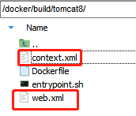
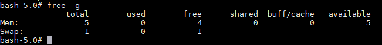
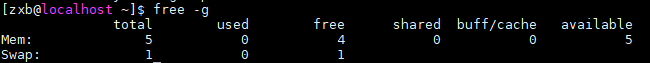
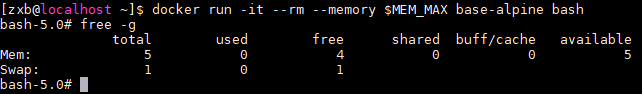
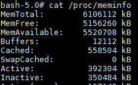
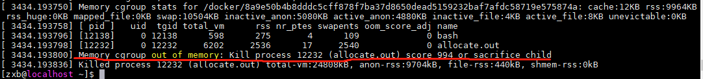
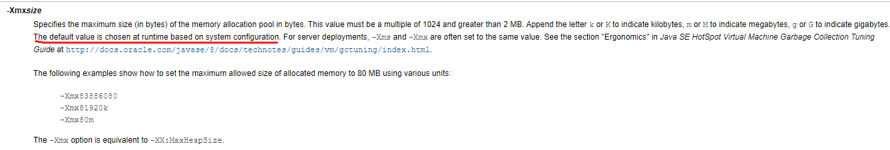
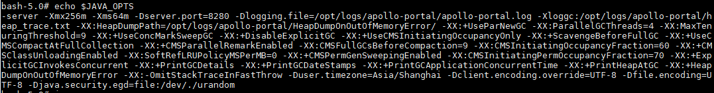

容器系列（三）：Docker基础镜像
文章目录
1. Base镜像的选择
Alpine 操作系统是一个面向安全的轻型 Linux 发行版。它不同于通常 Linux 发行版，Alpine 采用了 musl libc 和 busybox 以减小系统的体积和运行时资源消耗，但功能上比 busybox 又完善的多，因此得到开源社区越来越多的青睐。在保持瘦身的同时，Alpine 还提供了自己的包管理工具 apk，可以通过 https://pkgs.alpinelinux.org/packages 网站上查询包信息，也可以直接通过 apk 命令直接查询和安装各种软件。
Alpine 的容量非常小，它只有 5MB 左右，相比于 Ubuntu 系列镜像（近 200MB ）要小很多。基于 alpine 镜像，我们只需要选择安装自己需要的包就行了。
但是 Alpine 也有一些缺陷：
- alpine 是冷门的 Linux 发行版，用户较少
- alpine 自带的 musl libc ，软件生态较小众，目前绝大多数 Linux 软件是基于 glibc 的。
2. 构建基础镜像
2.1 构建base-alpine镜像
alpine 镜像并不方便直接使用，它没有 bash 环境，也未设置时区。构建 base-alpine 就是将常用的组件构建进来。主要添加如下内容：
- 设置apk软件包仓库镜像地址为阿里云
- 安装glibc环境
- 安装时区设置软件 tzdata
- 设置时区为东8区
- 添加别名 ll
1. 设置apk软件包仓库镜像地址为阿里云
|
|
2. 安装glibc环境
|
|
3. 安装时区设置软件 tzdata
1
|
apk add --no-cache tzdata |
4. 设置时区为东8区
1 2 |
ln -sf /usr/share/zoneinfo/Asia/Shanghai /etc/localtime && \
echo "Asia/Shanghai" > /etc/timezone && \ |
5. 添加别名 ll 通过 source 等方式读取 profile 下脚本设置别名一直未生效，所以更换为脚本方式。
创建脚本文件 /usr/bin/ll ，如下所示：
1 2 |
echo -e '#!/bin/bash\nls --color=auto -lah "$@"' > /usr/bin/ll && \
chmod +x /usr/bin/ll |
6. 删除临时文件 执行 apk 命令安装软件后，会在 /var/cache/apk/ 生成索引文件，大约1-2M左右，建议删除掉。
|
|
完整Dockerfile：
1 2 3 4 5 6 7 8 9 10 11 12 13 14 15 16 17 18 19 20 21 22 23 24 25 26 27 28 29 30 31 32 33 34 35 36 37 38 39 40 41 42 43 44 45 46 47 48 49 50 51 52 53 54 55 |
FROM alpine:3.10.2
LABEL name="base-alpine" \
maintainer="zxb@dameng.com"
## 设置默认语言环境
ENV LANG=C.UTF-8
# 安装 GNU libc (aka glibc)和C.UTF-8 locale的依赖 以及设置时区
# 下面这么长一串，主要是通过apk安装glibc的依赖，他的作用主要是本地化支持，和字符集的切换。
RUN sed -i 's|http://dl-cdn.alpinelinux.org|https://mirrors.aliyun.com|g' /etc/apk/repositories && \
ALPINE_GLIBC_BASE_URL="https://github.com/sgerrand/alpine-pkg-glibc/releases/download" && \
ALPINE_GLIBC_PACKAGE_VERSION="2.27-r0" && \
ALPINE_GLIBC_BASE_PACKAGE_FILENAME="glibc-$ALPINE_GLIBC_PACKAGE_VERSION.apk" && \
ALPINE_GLIBC_BIN_PACKAGE_FILENAME="glibc-bin-$ALPINE_GLIBC_PACKAGE_VERSION.apk" && \
ALPINE_GLIBC_I18N_PACKAGE_FILENAME="glibc-i18n-$ALPINE_GLIBC_PACKAGE_VERSION.apk" && \
apk add --no-cache bash && \
apk add --no-cache --virtual=.build-dependencies wget ca-certificates && \
echo \
"-----BEGIN PUBLIC KEY-----\
MIIBIjANBgkqhkiG9w0BAQEFAAOCAQ8AMIIBCgKCAQEApZ2u1KJKUu/fW4A25y9m\
y70AGEa/J3Wi5ibNVGNn1gT1r0VfgeWd0pUybS4UmcHdiNzxJPgoWQhV2SSW1JYu\
tOqKZF5QSN6X937PTUpNBjUvLtTQ1ve1fp39uf/lEXPpFpOPL88LKnDBgbh7wkCp\
m2KzLVGChf83MS0ShL6G9EQIAUxLm99VpgRjwqTQ/KfzGtpke1wqws4au0Ab4qPY\
KXvMLSPLUp7cfulWvhmZSegr5AdhNw5KNizPqCJT8ZrGvgHypXyiFvvAH5YRtSsc\
Zvo9GI2e2MaZyo9/lvb+LbLEJZKEQckqRj4P26gmASrZEPStwc+yqy1ShHLA0j6m\
1QIDAQAB\
-----END PUBLIC KEY-----" | sed 's/ */\n/g' > "/etc/apk/keys/sgerrand.rsa.pub" && \
wget \
"$ALPINE_GLIBC_BASE_URL/$ALPINE_GLIBC_PACKAGE_VERSION/$ALPINE_GLIBC_BASE_PACKAGE_FILENAME" \
"$ALPINE_GLIBC_BASE_URL/$ALPINE_GLIBC_PACKAGE_VERSION/$ALPINE_GLIBC_BIN_PACKAGE_FILENAME" \
"$ALPINE_GLIBC_BASE_URL/$ALPINE_GLIBC_PACKAGE_VERSION/$ALPINE_GLIBC_I18N_PACKAGE_FILENAME" && \
apk add --no-cache \
"$ALPINE_GLIBC_BASE_PACKAGE_FILENAME" \
"$ALPINE_GLIBC_BIN_PACKAGE_FILENAME" \
"$ALPINE_GLIBC_I18N_PACKAGE_FILENAME" && \
\
rm "/etc/apk/keys/sgerrand.rsa.pub" && \
/usr/glibc-compat/bin/localedef --force --inputfile POSIX --charmap UTF-8 "$LANG" || true && \
echo "export LANG=$LANG" > /etc/profile.d/locale.sh && \
\
apk del glibc-i18n && \
rm "/root/.wget-hsts" && \
apk del .build-dependencies && \
rm \
"$ALPINE_GLIBC_BASE_PACKAGE_FILENAME" \
"$ALPINE_GLIBC_BIN_PACKAGE_FILENAME" \
"$ALPINE_GLIBC_I18N_PACKAGE_FILENAME" && \
apk update && apk add --no-cache tzdata && \
ln -sf /usr/share/zoneinfo/Asia/Shanghai /etc/localtime && \
echo "Asia/Shanghai" > /etc/timezone && \
echo -e '#!/bin/bash\nls --color=auto -lah "$@"' > /usr/bin/ll && \
chmod +x /usr/bin/ll && \
rm -rf /var/cache/apk/* && \
rm -rf /tmp/* |
提示：
Best Practices for writing Dockerfiles中提到
RUN、COPY、ADD指令会创建层。为减少镜像的大小，上面只运行了一个 RUN 指令。
镜像构建成功后，大小为 18.1MB
1
|
base-alpine latest cfaa87886810 6 days ago 18.1MB |
2.2 构建oracle-jdk8镜像
Oracle jdk8 安装包的压缩包大约在 180 MB 左右，解压后大约在 300MB+ 左右。为了减少jd8镜像包的体积，在构建时会移除jdk8中不需要的部分。
完整Dockerfile：
1 2 3 4 5 6 7 8 9 10 11 12 13 14 15 16 17 18 19 20 21 22 23 24 25 26 27 28 29 30 31 32 33 34 35 36 |
FROM base-alpine:latest
ENV JAVA_VERSION=8 \
JAVA_HOME="/usr/local/java"
RUN cd "/tmp" && \
wget "http://192.168.52.1/jdk-8u102-linux-x64.tar.gz" && \
tar -xzf "jdk-8u102-linux-x64.tar.gz" && \
mv "/tmp/jdk1.8.0_102" "/usr/local/" && \
ln -s "/usr/local/jdk1.8.0_102/" "$JAVA_HOME" && \
ln -s "$JAVA_HOME/bin/"* "/usr/bin/" && \
rm -rf "$JAVA_HOME/"*src.zip && \
rm -rf "$JAVA_HOME/lib/missioncontrol" \
"$JAVA_HOME/lib/visualvm" \
"$JAVA_HOME/lib/"*javafx* \
"$JAVA_HOME/jre/lib/plugin.jar" \
"$JAVA_HOME/jre/lib/ext/jfxrt.jar" \
"$JAVA_HOME/jre/bin/javaws" \
"$JAVA_HOME/jre/lib/javaws.jar" \
"$JAVA_HOME/jre/lib/desktop" \
"$JAVA_HOME/jre/plugin" \
"$JAVA_HOME/jre/lib/"deploy* \
"$JAVA_HOME/jre/lib/"*javafx* \
"$JAVA_HOME/jre/lib/"*jfx* \
"$JAVA_HOME/jre/lib/amd64/libdecora_sse.so" \
"$JAVA_HOME/jre/lib/amd64/"libprism_*.so \
"$JAVA_HOME/jre/lib/amd64/libfxplugins.so" \
"$JAVA_HOME/jre/lib/amd64/libglass.so" \
"$JAVA_HOME/jre/lib/amd64/libgstreamer-lite.so" \
"$JAVA_HOME/jre/lib/amd64/"libjavafx*.so \
"$JAVA_HOME/jre/lib/amd64/"libjfx*.so && \
rm -rf /tmp/jdk-8u102-linux-x64.tar.gz && \
\
echo 'public class Main { public static void main(String[] args) { System.out.println("Java code is running fine!"); } }' > Main.java && \
javac Main.java && \
java Main |
构建出来的 jdk8 镜像为 177MB
1
|
jdk8 latest 0a23f8de5f5b 6 days ago 177MB |
提示：采用 wget 命令而不是 COPY 命令来获取 jdk 安装包，可以减少一个 layer ，从而减少镜像体积。在新版本 docker 中，提供了 multi stage build ，在 Dockerfile 中可以指定多个 FROM 指令。
使用 multi stage build ，Dockerfile如下：
1 2 3 4 5 6 7 8 9 10 11 12 13 14 15 16 17 18 19 20 21 22 23 24 25 26 27 28 29 30 31 32 33 34 35 36 37 38 39 40 41 |
FROM base-alpine:latest AS build
ENV JAVA_HOME="/usr/local/java"
COPY jdk-8u102-linux-x64.tar.gz /tmp/
RUN cd "/tmp" && \
tar -xzf "jdk-8u102-linux-x64.tar.gz" && \
mv "/tmp/jdk1.8.0_102" "/usr/local/" && \
ln -s "/usr/local/jdk1.8.0_102/" "$JAVA_HOME" && \
ln -s "$JAVA_HOME/bin/"* "/usr/bin/" && \
rm -rf "$JAVA_HOME/"*src.zip && \
rm -rf "$JAVA_HOME/lib/missioncontrol" \
"$JAVA_HOME/lib/visualvm" \
"$JAVA_HOME/lib/"*javafx* \
"$JAVA_HOME/jre/lib/plugin.jar" \
"$JAVA_HOME/jre/lib/ext/jfxrt.jar" \
"$JAVA_HOME/jre/bin/javaws" \
"$JAVA_HOME/jre/lib/javaws.jar" \
"$JAVA_HOME/jre/lib/desktop" \
"$JAVA_HOME/jre/plugin" \
"$JAVA_HOME/jre/lib/"deploy* \
"$JAVA_HOME/jre/lib/"*javafx* \
"$JAVA_HOME/jre/lib/"*jfx* \
"$JAVA_HOME/jre/lib/amd64/libdecora_sse.so" \
"$JAVA_HOME/jre/lib/amd64/"libprism_*.so \
"$JAVA_HOME/jre/lib/amd64/libfxplugins.so" \
"$JAVA_HOME/jre/lib/amd64/libglass.so" \
"$JAVA_HOME/jre/lib/amd64/libgstreamer-lite.so" \
"$JAVA_HOME/jre/lib/amd64/"libjavafx*.so \
"$JAVA_HOME/jre/lib/amd64/"libjfx*.so && \
rm -rf /tmp/jdk-8u102-linux-x64.tar.gz && \
\
echo 'public class Main { public static void main(String[] args) { System.out.println("Java code is running fine!"); } }' > Main.java && \
javac Main.java && \
java Main
FROM base-alpine:latest
ENV JAVA_HOME="/usr/local/java" \
PATH="${PATH}:/usr/local/java/bin"
COPY --from=build $JAVA_HOME $JAVA_HOME |
镜像大小同样为 177MB
1
|
jdk8 latest 22f18fad00be About a minute ago 177MB |
提示：目前制作的 Oracle jdk8 镜像并没有替换 security 下的 jce 相关包，考虑到目前场景下用不上便暂未替换。
2.3 构建tomcat8镜像
tomcat8 存在多种方式用于启动工程，在 server.xml 中添加工程路径，或者将工程拷贝到 webapps 目录下。
制作 tomcat8 镜像主要需要考虑如下几点：
- 开启 shtml 支持
- 设置好环境变量，如
TOMCAT_HOME，CATALINA_HOME - 日志文件
- 自定义 entrypoint.sh
1. 开启shtml支持
部分应用可能会使用 shtml 功能，但是在默认情况下 tomcat8 是未开启 shtml 页面支持的。开启 shtml 支持需要修改相关配置文件。
conf/web.xml中取消ssi的注释
|
|
注意：相较于默认配置，上述配置中额外添加了
inputEncoding和outputEncoding配置
conf/context.xml中设置privileged="true"
1 2 3 4 5 6 7 8 9 10 11 12 |
<Context privileged="true">
<!-- Default set of monitored resources. If one of these changes, the -->
<!-- web application will be reloaded. -->
<WatchedResource>WEB-INF/web.xml</WatchedResource>
<WatchedResource>${catalina.base}/conf/web.xml</WatchedResource>
<!-- Uncomment this to disable session persistence across Tomcat restarts -->
<!--
<Manager pathname="" />
-->
</Context> |
在 docker build context 下放置好这2个文件。

2. 环境变量设置
设置好 TOMCAT 需要的环境变量，并且将 tomcat 的 bin 目录添加到 PATH 中。
1 2 3 |
ENV TOMCAT_HOME=/opt/tomcat \
CATALINA_HOME=/opt/tomcat \
PATH="${PATH}:/opt/tomcat/bin" |
3. 日志文件
tomcat 中的控制台输出默认情况下会写入到 logs/catalina.out 文件中，但是 catalina.out 文件默认是未做文件分割的，在容器环境下极易占满磁盘空间导致容器不可用。在生产环境下建议容器中不再输出日志到 catalina.out 文件，而是由应用程序自己通过 log4j 写入到工程相关的日志文件中。
在 Dockerfile 中声明环境变量 CATALINA_OUT 为 /dev/null
1
|
ENV CATALINA_OUT=/dev/null |
如果需要查看日志，应通过 docker logs container_id 方式查看 tomcat 日志。 > 注意： docker logs 查看 tomcat 日志，需要 tomcat 以前台方式启动，即 bin/catalina.sh run
4. 自定义entrypoint.sh
上面配置完成后，就可以直接使用 catalina.sh run 运行 tomcat 。考虑到安全问题，建议单独添加用户 tomcat 来运行，此时需要额外安装 go-su 或者 su-exec 。
> go-su 安装文档中推荐使用 su-exec ，因为它们功能类似，但是 su-exec 更小。
Dockerfile 中添加安装 su-exec 命令
1
|
RUN apk add --no-cache su-exec |
编写 entrypoint.sh ，当用户执行 catalina.sh 命令时，通过 tomcat 用户执行。
entrypoint.sh：
|
|
完整的Dockerfile：
1 2 3 4 5 6 7 8 9 10 11 12 13 14 15 16 17 18 19 20 21 22 23 24 25 26 27 28 29 30 31 32 33 34 35 36 |
FROM jdk8:latest
LABEL maintainer="张雄彪 <zxb@dameng.com>"
ENV TOMCAT_MAJOR=8 \
TOMCAT_VERSION=8.5.3 \
TOMCAT_HOME=/opt/tomcat \
CATALINA_HOME=/opt/tomcat \
PATH="${PATH}:/opt/tomcat/bin" \
CATALINA_OUT=/dev/null
COPY entrypoint.sh web.xml context.xml /tmp/
# download and install tomcat 8
RUN apk add --no-cache curl && \
curl -jksSL -o /tmp/apache-tomcat.tar.gz http://archive.apache.org/dist/tomcat/tomcat-${TOMCAT_MAJOR}/v${TOMCAT_VERSION}/bin/apache-tomcat-${TOMCAT_VERSION}.tar.gz && \
gunzip /tmp/apache-tomcat.tar.gz && \
tar -C /opt -xf /tmp/apache-tomcat.tar && \
ln -s /opt/apache-tomcat-${TOMCAT_VERSION} ${TOMCAT_HOME} && \
# add config
mv /tmp/entrypoint.sh /bin/entrypoint.sh && \
mv /tmp/web.xml /tmp/context.xml ${TOMCAT_HOME}/conf/ && \
# install su-exec
apk add --no-cache su-exec && \
# clean up
apk del curl && \
rm -rf ${TOMCAT_HOME}/webapps/* && \
rm -rf /tmp/* /var/cache/apk/* && \
USER_ID=${TOMCAT_USER_ID:-1000} && \
GROUP_ID=${TOMCAT_GROUP_ID:-1000} && \
addgroup -g ${GROUP_ID} tomcat && \
adduser -u ${USER_ID} -G tomcat -h ${CATALINA_HOME} -D -s /sbin/nologin tomcat && \
chown -L -R tomcat:tomcat ${CATALINA_HOME} && chmod 400 ${CATALINA_HOME}/conf/* && \
sync
EXPOSE 8080 |
现在上层应用使用该 Tomcat 基础镜像时，只需要拷贝包，然后设置启动命令。
下面是某应用示例的 Dockerfile
1 2 3 4 5 6 7 8 9 10 11 12 13 14 15 16 17 18 19 20 21 22 23 |
# 拷贝war包并解压
ARG NAME="dmga-cas"
ARG DOC_PATH="/${NAME}"
FROM jdk8:latest AS build
ARG NAME
ARG DOC_PATH
ENV VERSION=3.0.1
COPY ${NAME}-${VERSION}-SNAPSHOT.war /opt/apps/${NAME}/
RUN cd /opt/apps/${NAME} \
&& jar -xvf ${NAME}-${VERSION}-SNAPSHOT.war \
&& rm -rf ${NAME}-${VERSION}-SNAPSHOT.war
# 设置server.xml，设置CMD及ENTRYPOINT
FROM tomcat8:latest
LABEL maintainer="张雄彪 <zxb@dameng.com>"
ARG NAME
ARG DOC_PATH
ENV JAVA_OPTS="-server -Xmx256m -Xms128m -Xmn64m"
COPY --from=build /opt/apps /opt/apps
RUN sed -i "/<\/Host>/i\<Context path=\"/${DOC_PATH}\" docBase=\"/opt/apps/${NAME}\" reloadable=\"false\" />" ${TOMCAT_HOME}/conf/server.xml
EXPOSE 8080
CMD [ "catalina.sh", "run" ]
ENTRYPOINT [ "entrypoint.sh" ] |
3. 容器init进程
Docker 容器进程主要采用 PID namespace 进行隔离，通过 PID namespace 隔离后容器内的进程会和宿主机上的其它进程隔离，容器内只会看到容器相关的进程。 PID namespace 是一个根进程PID为1的进程树。
> 当运行容器时， PID 为1的进程通常是你设置的 ENTRYPOINT 或者 CMD 命令的进程。
相较于容器中的其它进程， PID 为1的进程需要处理僵尸进程。
僵尸进程主要是如下几类进程： 1. 没有被其父进程等待退出的子进程 2. 没有父进程了（父进程已经退出，子进程未收到退出信号）
当僵尸进程出现时，通常是其父进程已经退出了，此时僵尸进程会重新将 PID 为1的init进程作为父进程，此时init进程就需要处理该僵尸进程。
JVM 程序（exec java）并不能很好地处理僵尸进程，通常僵尸进程应该是通过修复代码来避免创建僵尸进程，但是像 Jenkins 它没法通过代码修复，因为它需要运行你那些自定义的构建脚本。
而且如果你用 Bash 脚本直接运行你的进程， Bash 脚本并不会将 signals 转发到你的进程。当执行 docker stop 等命令时，你的进程可能永远也收不到退出命令。这也是为什么在 shell 脚本中会使用 exec 命令启动你的程序。使用 Bash 脚本还有个问题，当你的程序因为异常退出时，可能 Bash 会返回 exit 0，这会干扰你的判断（因为 exit 0 表示正常退出）。
综合上面的情况，在容器启动脚本处需要注意的是：
* 当你的程序可以很好地处理 signals 信号转发及僵尸进程问题时，如果存在启动脚本，应以 exec 执行你的程序。
* 请使用 tini 这种init程序
Tini 启动程序 在 Docker 1.13 或更高版本中，已经集成了 tini 启动程序。使用起来很简单：
docker run方式：
1
|
docker run --init 镜像名称 |
docker-compose方式：
1 2 3 4 5 6 |
version: '2.4'
services:
dmga-dg-portal:
build: ./apps/dmga-dg-portal
image: dmga-dg-portal:latest
init: true # 指定启动进程为tini |
多进程启动管理supervisord
在 docker 容器中，按约定应该是一个容器一个应用进程。但是某些较重的容器应用，仍然需要容器中运行多个进程。例如，一个单机的 Hadoop 程序（非生产），它需要在同一个容器中运行 NameNode 和 DataNode 等进程。
针对在同一容器中运行多进程的情况下，可以采用 supervisord 管理进程。
alpine下安装supervisor
1
|
RUN apk add --no-cache supervisor |
添加配置文件及启动命令
1 2 3 |
ADD supervisord.conf /etc/supervisord.conf CMD ["/usr/bin/supervisord", "--nodaemon", "--configuration", "/etc/supervisord.conf"] |
supervisord.conf 文件内容
1 2 3 4 5 6 7 8 9 10 11 12 13 14 15 16 17 18 19 20 21 22 23 24 25 26 27 28 29 30 31 32 33 34 35 36 37 38 |
[supervisord] logfile = /var/log/supervisord [program:namenode] command = %(ENV_HADOOP_PREFIX)s/bin/hdfs --config %(ENV_HADOOP_CONF_DIR)s namenode stdout_logfile=/dev/stdout stderr_logfile=/dev/stdout stdout_logfile_maxbytes=0 stderr_logfile_maxbytes=0 nocleanup = true autostart = true [program:resourcemanager] command = %(ENV_HADOOP_PREFIX)s/bin/yarn --config %(ENV_HADOOP_CONF_DIR)s resourcemanager stdout_logfile=/dev/stdout stderr_logfile=/dev/stdout stdout_logfile_maxbytes=0 stderr_logfile_maxbytes=0 nocleanup = true autostart = true [program:datanode] command = %(ENV_HADOOP_PREFIX)s/bin/hdfs --config %(ENV_HADOOP_CONF_DIR)s datanode stdout_logfile=/dev/stdout stderr_logfile=/dev/stdout stdout_logfile_maxbytes=0 stderr_logfile_maxbytes=0 nocleanup = true autostart = true [program:nodemanager] command = %(ENV_HADOOP_PREFIX)s/bin/yarn --config %(ENV_HADOOP_CONF_DIR)s nodemanager stdout_logfile=/dev/stdout stderr_logfile=/dev/stdout stdout_logfile_maxbytes=0 stderr_logfile_maxbytes=0 nocleanup = true autostart = true |
4. 内存控制
参考链接：why top inside container wrong memory
4.1 容器中使用free命令查看内存
使用 free 命令查看容器中的内存：

容器中看到的内存和宿主机上看到的一样：

给容器添加上内存限制再启动查看内存
1 2 3 4 5 |
# 10MB MEM_MAX="$((1024 * 1024 * 10))" # 限制容器可使用内存为10MB docker run -it --rm --memory $MEM_MAX base-alpine bash |
通过 free 命令查看，容器中看到的依然是宿主机的内存。 
4.2 free 命令是如何统计内存的
使用 strace 命令追踪 free 命令的系统调用
安装 strace 命令
1sudo yum install strace -y
追踪 free 系统调用
1strace -f free
输出如下：
1 2 3 4 5
...省略上面部分内容 open("/proc/meminfo", O_RDONLY) = 3 lseek(3, 0, SEEK_SET) = 0 read(3, "MemTotal: 6106112 kB\nMemF"..., 8191) = 1254 ...省略下面部分内容
可以看到 free 命令主要是从 /proc/meminfo 中读取 MemTotal 等字段内容。
查看 /proc/meminfo 内容
1 2 3 4 5 6
[zxb@localhost ~]$ cat /proc/meminfo MemTotal: 6106112 kB MemFree: 5156112 kB MemAvailable: 5520560 kB Buffers: 12112 kB ...... 省略下面部分内容
从容器中查看 /proc/meminfo 信息  容器中输出的内容同宿主机上输出的内容一致。
4.3 容器是如何限制内存的
在文档docker采用的底层技术中提到， docker 主要是通过 Linux namespace 相关技术进行隔离，通过 cgroups 技术限制 cpu、memory 等资源的使用。
当容器中应用超出了容器的内存限制时会发生什么？
编写如下程序，该程序会分配 20MB 内存
1 2 3 4 5 6 7 8 9 10 11 12 13 14 15 16 17 18 19 20 21 22 23 24 25 26 27 28 29 30 31 32 33 34 35 36 37 38 39 |
#include <stdio.h>
#include <stdlib.h>
#include <string.h>
#define MEGABYTE (1 << 20)
#define ALLOCATIONS 20
/**
* alloc - a "leaky" program that just allocated
* a predefined amount of memory and then
* exits.
*/
int
main(int argc, char** argv)
{
printf("allocating: %dMB\n", ALLOCATIONS);
void* p;
int i = ALLOCATIONS;
while (i-- > 0) {
// Allocate 1MB (not initializing it
// though).
p = malloc(MEGABYTE);
if (p == NULL) {
perror("malloc");
return 1;
}
// Explicitly initialize the area that
// has been allocated.
memset(p, 65, MEGABYTE);
printf("remaining\t%d\n", i);
}
} |
编译该文件：
1
|
gcc allocate.c -o allocate.out |
运行一个限制内存大小为 10MB 的容器
1 2 |
MEM_MAX="$((1024 * 1024 * 10))" docker run -it --rm --memory $MEM_MAX base-alpine bash |
容器中执行该程序
1 2 3 4 5 6 7 8 9 10 11 12 13 14 15 16 17 18 19 20 21 22 |
bash-5.0# ./allocate.out allocating: 20MB remaining 19 remaining 18 remaining 17 remaining 16 remaining 15 remaining 14 remaining 13 remaining 12 remaining 11 remaining 10 remaining 9 remaining 8 remaining 7 remaining 6 remaining 5 remaining 4 remaining 3 remaining 2 remaining 1 Killed |
可以看到该程序因为触发 OOM 被杀掉了。在宿主机执行 dmesg 命令可以清晰地看到相关日志信息：

也就是说当容器内应用程序内存超出容器内存限制时，会触发 OOM ，最终被杀掉。
但是这并没有解释为什么容器内查看到的是宿主机的内存。 > 这个问题主要原因是：通过 cgroups 进行的内存限制是没有被命名空间隔离的。具体请参考why top inside container wrong memory
4.4 java程序在容器中如何控制内存
1. 不设置容器内存限制及JVM内存参数限制
运行一个 java 程序：
|
|
jps 命令可以看到该程序无内存参数配置
1
|
1 org.apache.catalina.startup.Bootstrap start -Djava.util.logging.config.file=/opt/tomcat/conf/logging.properties -Djava.util.logging.manager=org.apache.juli.ClassLoaderLogManager -Djdk.tls.ephemeralDHKeySize=2048 -Dcatalina.base=/opt/tomcat -Dcatalina.home=/opt/tomcat -Djava.io.tmpdir=/opt/tomcat/temp |
通过 jstat -gccapacity 命令查看该程序的内存分配情况
1 2 |
NGCMN NGCMX NGC S0C S1C EC OGCMN OGCMX OGC OC MCMN MCMX MC CCSMN CCSMX CCSC YGC FGC 31744.0 508928.0 508928.0 31744.0 33280.0 300032.0 64512.0 1018880.0 68608.0 68608.0 0.0 1069056.0 21248.0 0.0 1048576.0 2560.0 11 1 |
该程序 -Xmx 约为 (OGCMX:1018880 + NGCMX:508928)/1024=1492MB
通过 java -XX:+PrintFlagsFinal -version | grep HeapSize 命令也可以查出 -Xmx 默认大小是 1492MB 。
1 2 3 4 5 6 |
bash-5.0# java -XX:+PrintFlagsFinal -version | grep HeapSize
uintx ErgoHeapSizeLimit = 0 {product}
uintx HeapSizePerGCThread = 87241520 {product}
uintx InitialHeapSize := 98566144 {product}
uintx LargePageHeapSizeThreshold = 134217728 {product}
uintx MaxHeapSize := 1564475392 {product} |
1564475392 bytes / 1024 = 1527808 kb = 1492MB
在 java8 官方文档 中提到， -Xmx 参数的默认值是在运行时根据系统配置计算出来的。 
很明显，这里默认 java 内存参数是读取到了宿主机的内存配置然后再计算出来的。
2. 设置容器内存限制
如果只设置容器内存限制，不设置 -Xmx 参数， java 程序默认的内存配置会是多少？
1 2 3 4 |
# 限制容器最大内存为512MB MEM_MAX="$((1024 * 1024 * 512))" docker run -d --memory $MEM_MAX dmga-cas |
再使用 jstat -gccapacity 查看当前程序内存分配情况
1 2 |
NGCMN NGCMX NGC S0C S1C EC OGCMN OGCMX OGC OC MCMN MCMX MC CCSMN CCS 31744.0 508928.0 489472.0 33792.0 32768.0 379904.0 64512.0 1018880.0 108032.0 108032.0 0.0 1071104.0 24108.0 0.0 1 |
该程序 -Xmx 约为 (OGCMX:1018880 + NGCMX:508928)/1024=1492MB
也就说设置容器内存限制，并不会导致 java 程序计算出来的 -Xmx 默认值有何改变，它依然是根据宿主机内存大小计算出来的。
这会出现一个比较 严重 的问题，当容器限制内存大小比 java 程序默认计算出来的堆内存小时， java 程序可能会因为 OOM 被 kill 掉。
3. 设置容器内存限制及JVM参数内存限制
针对容器内的 java 程序，设置内存参数的正确姿势应该是： 1. 只设置 JVM 相关内存参数 2. 设置容器内存限制，同时将 JVM 相关内存参数值设置地小于容器内存参数
推荐第2种方式
4. 自动根据容器内存限制调整JVM内存限制
fabric8/java-alpine-openjdk8-jdk提供的 jdk8 镜像，它提供了一个启动脚本 run-java.sh。该脚本中通过获取容器内存限制来计算出 JVM 的内存参数。
可以直接使用该 JDK 镜像或参考该脚本。
4.5 SpringBoot程序不支持 JAVA_OPTS 环境变量设置
Spring Boot 版本：v1.3.8.RELEASE
Dockerfile部分内容
1 2 |
ENV JAVA_OPTS="-server -Xmx256m -Xms64m -Dserver.port=$SERVER_PORT -Dlogging.file=$LOG_DIR/$SERVICE_NAME.log -Xloggc:$LOG_DIR/heap_trace.txt -XX:HeapDumpPath=$LOG_DIR/HeapDumpOnOutOfMemoryError/ -XX:+UseParNewGC -XX:ParallelGCThreads=4 -XX:MaxTenuringThreshold=9 -XX:+UseConcMarkSweepGC -XX:+DisableExplicitGC -XX:+UseCMSInitiatingOccupancyOnly -XX:+ScavengeBeforeFullGC -XX:+UseCMSCompactAtFullCollection -XX:+CMSParallelRemarkEnabled -XX:CMSFullGCsBeforeCompaction=9 -XX:CMSInitiatingOccupancyFraction=60 -XX:+CMSClassUnloadingEnabled -XX:SoftRefLRUPolicyMSPerMB=0 -XX:+CMSPermGenSweepingEnabled -XX:CMSInitiatingPermOccupancyFraction=70 -XX:+ExplicitGCInvokesConcurrent -XX:+PrintGCDetails -XX:+PrintGCDateStamps -XX:+PrintGCApplicationConcurrentTime -XX:+PrintHeapAtGC -XX:+HeapDumpOnOutOfMemoryError -XX:-OmitStackTraceInFastThrow -Duser.timezone=Asia/Shanghai -Dclient.encoding.override=UTF-8 -Dfile.encoding=UTF-8 -Djava.security.egd=file:/dev/./urandom" CMD [ "java", "-jar", "/bin/apollo.jar" ] |
在容器中可以看到环境变量 JAVA_OPTS 确实被设置了 
通过 jstat -gccapacity 查看到 -Xmx 仍然为 1492MB
1 2 |
NGCMN NGCMX NGC S0C S1C EC OGCMN OGCMX OGC OC MCMN MCMX MC CCSMN CCS 31744.0 508928.0 508928.0 11264.0 11264.0 417792.0 64512.0 1018880.0 67584.0 67584.0 0.0 1073152.0 26752.0 0.0 1 |
经过了解， boot 程序需要手动设置 JVM 参数，如下所示：
1
|
ENTRYPOINT ["sh", "-c", "java $JAVA_OPTS -jar /bin/apollo.jar"] |
文章作者 张雄彪
上次更新 2019-09-29